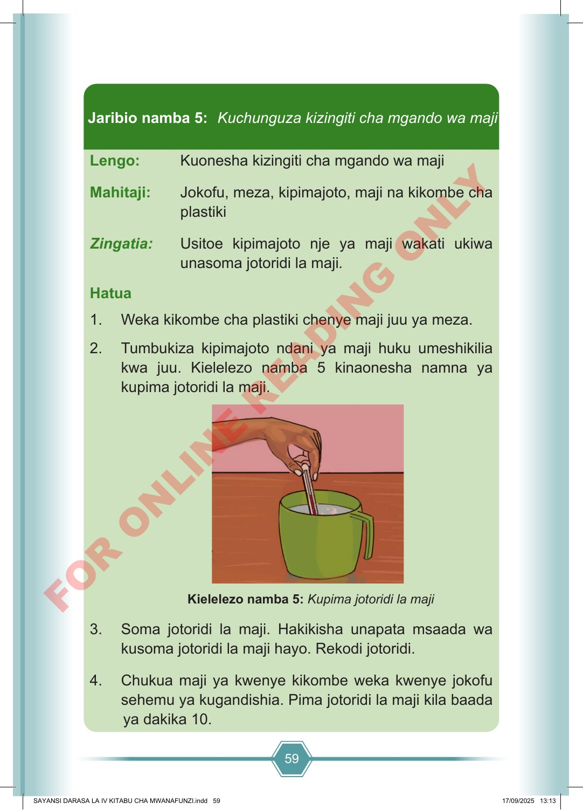

59 Lengo: Kuonesha kizingiti cha mgando wa maji Mahitaji: Jokofu, meza, kipimajoto, maji na kikombe cha plastiki Zingatia: Usitoe kipimajoto nje ya maji wakati ukiwa unasoma jotoridi la maji. Hatua 1. Weka kikombe cha plastiki chenye maji juu ya meza. 2. Tumbukiza kipimajoto ndani ya maji huku umeshikilia kwa juu. Kielelezo namba 5 kinaonesha namna ya kupima jotoridi la maji. Kielelezo namba 5: Kupima jotoridi la maji 3. Soma jotoridi la maji. Hakikisha unapata msaada wa kusoma jotoridi la maji hayo. Rekodi jotoridi. 4. Chukua maji ya kwenye kikombe weka kwenye jokofu sehemu ya kugandishia. Pima jotoridi la maji kila baada ya dakika 10. Jaribio namba 5: Kuchunguza kizingiti cha mgando wa maji SAYANSI DARASA LA IV KITABU CHA MWANAFUNZI.indd 59 SAYANSI DARASA LA IV KITABU CHA MWANAFUNZI.indd 59 17/09/2025 13:13 17/09/2025 13:13 F O R O N L I N E R E A D I N G O N L Y